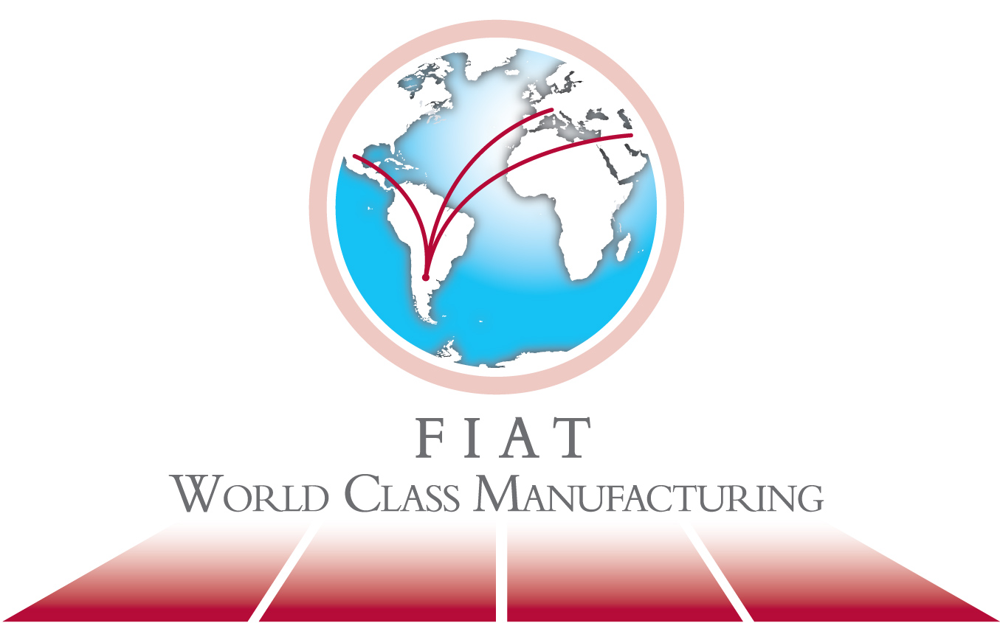

En 2014, Fiat cumple 94 años en la Argentina. Esta larga presencia en el país la ha convertido en una marca ligada a la vida de los argentinos, con una amplia gama de productos que apuntan a satisfacer las necesidades de movilidad de vastos sectores del mercado. A casi un siglo de su creación, hoy la empresa goza de un alto y sostenido grado de reconocimiento por su solidez, confiabilidad, rendimiento y economía.
La primera sociedad legal de Fiat en Argentina fue constituida en 1919. La División Auto de Fiat Auto Argentina S.A. (FAA) que se dedica a la producción, comercialización y asistencia de postventa de vehículos y componentes para el mercado nacional e internacional, comenzó a funcionar el 22 de marzo de 1995.
La renovación y ampliación de su gama de productos operada en los últimos años, sumadas a la introducción de tecnologías innovadoras (Motor diesel MultiJet, tecnología MultiAir, sistema Eco:Drive, caja de cambios Dualogic) y equipamientos novedosos (Bluetooth, diferencial autoblocante Locker para su gama Adventure, entre otros), han permitido ampliar la cobertura de mercado y mejorar la imagen de la marca, asociada con la oferta de este tipo de productos aspiracionales y de avanzada.
La fabricación de autos Fiat en la Argentina comenzó en 1960, en la provincia de Buenos Aires. En 1996 se inició una segunda etapa y, tras una inversión de U$S 600 millones, se inauguró la planta de Córdoba.
En 2007 se aumentó la capacidad productiva a 220.000 unidades/año, para retomar la producción de la cuarta generación del modelo con el que nació la planta cordobesa: el Fiat Siena. Actualmente, en Ferreyra se producen 650 unidades en dos turnos. En 2009 se superó el hito de dos millones de unidades fabricadas en el país y en 2012, se terminaron de adecuar las líneas para comenzar a producir una nueva plataforma: el Nuevo Palio.
Para Fiat, el desarrollo de una empresa no es solamente una cuestión de tecnología o de recursos financieros. Es, en primer lugar, una cuestión de personas, de cultura, de capacidad, de empeño permanente en la innovación, en el respeto a sus clientes y de integración responsable de su cadena de valor. De allí que recibió en el 2010, con gran satisfacción, el Premio Nacional a la Calidad, luego de aplicar en su gestión cotidiana el Modelo para una Gestión Empresarial de Excelencia. Esta distinción la convirtió en referente de la excelencia en su rubro, ya que fue la primera empresa automotriz en obtener este premio nacional. También en 2011 obtuvo el cuarto lugar en el ranking Great Place to Work, convirtiéndose también en la primera automotriz del país en ingresar en tan prestigioso ranking que mide el clima organizacional.

Fiat Auto Argentina cuenta con las más reconocidas certificaciones de calidad internacionales e implementa los principios de World Class Manufacturing (WCM). Esta metodología se encuadra en el marco del Plan de Sustentabilidad de Fiat a nivel mundial, la cual establece premisas precisas sobre la gestión responsable en lo económico, social y ambiental.
SUMATE A NUESTRO EQUIPO
http://www.fiat.com.ar/Institucional/Sumate-al-equipo-Fiat